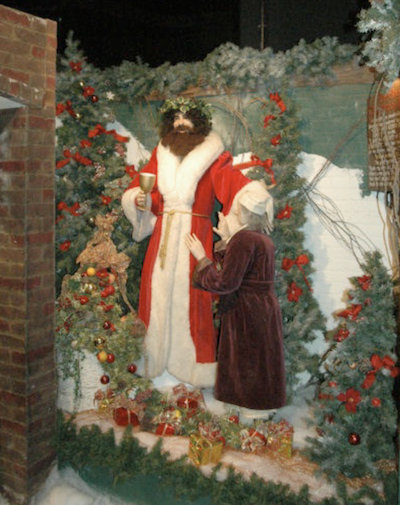
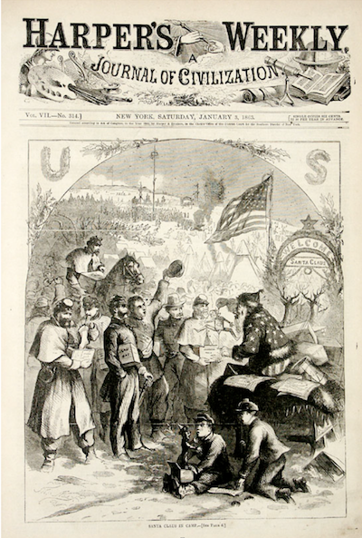
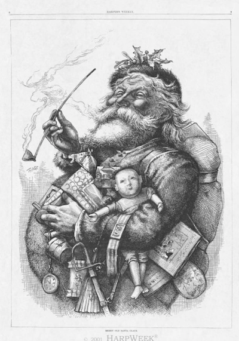

/// Santanalia Fact & Fiction ///
/// Santanalia Fact & Fiction ///
/// Santanalia Fact & Fiction ///
The Origins of Santanalia
by Ian Downey (2013)
Santanalia is clearly a syncretism, a combination of many different traditions. Santa Claus is generally thought to be derived from the Dutch figure of Sinterklaas, a thin, stern man in a big white beard and a hat similar to a Pope’s mitre but bright red, who gives toys to children on Dec. 5th every year in the Netherlands. Sinterklaas has a variety of helpers, including one named Zwarte Piet (literally Black Peter.) If a child is good, Sinterklaas will give him presents. If he is bad, Zwarte Piet will capture him in his magic bag and later eat him.
A similar ritual is performed in Belgium, but on the morning of Dec. 6th. In France, they have a character similar to Black Peter, named le Pere Fouettard (literally “the whipping father”). According to legend, Pere Fouettard rides a wagon pulled by a goat through underground tunnels, capturing chiildren and putting them to work in his coal mines. In Austria, they have a figure who may or may not be related, called “Krampus.” Every year, thousands of young men, mostly in their early twenties, dress up in terrifying, demonic-looking costumes with horns, whips and chains, and run through the streets, scaring children.
What is the origin of these stories? Some point to Norse mythology – Santa Claus and Black Peter (Economicus) may be new versions of Odin (the white-bearded chief of the Gods) and Loki (his trickster helper), or Odin and one of his pet black crows (some of the early symbolism surrounding Black Peter is connected with crows).
Clearly the name Santanalia is likely related to Saturnalia, the ancient Roman festival, which was held from December 17th to December 23, though because of discrepancies between the Julian and Gregorian calendar may have been later by our calendar. This was a festival to honor of the god Saturn. Saturn was the Roman equivalent of the Greek Titan Kronos, the god of time, and the story parallels Santanalia in many ways. Santa may be seen as a being similar to Zeus, the son of Kronos, with his friendly, generous, “jovial” demeanor. The word “Jolly” is etymologically related to Jove, the Latin name for Zeus, and is a common epithet for Santa, or “Jolly Saint Nick”. (See, for instance, Holst’s piece in “the Planets,” called “Jupiter, Bringer of Jollity,” Jupiter being another name for Jove.) In addition, Jove was often equated with Odin, once the Romans conquered and assimilated Germanic tribes.
According to the myth of Kronos, Kronos (Father Time) eats his children, until one of them, Zeus, tricks him, splitting his father’s stomach open, so that the brothers and sisters can get out. These brothers and sisters become the gods, with Zeus as their King, and when they mature into adulthood, Zeus leads the gods to overcome Kronos and the Titans, expelling them from the upper region and establishing the Pantheon on Mt. Olympus, a high snowy peak.
In medieval times, “Father Time” was often depicted as an old withered man with a long beard and a scythe. Also, there are many images from medieval manuscripts which depict a “Santa”-ish looking figure, usually accompanied by a cornucopia (horn of plenty, a horn that contained an infinite number of treats). Sometimes this would be represented as a bag, and as far away as China there are legends of an old sage who had a bag with an infinite number of gifts which he would give to children, suggesting that Santa may something like what Carl Jung called an “archetype,” existing in the collective unconscious of all peoples all over the world.
In the Middle Ages, Christmas absorbed many pagan beliefs and practices and became a festival in which one person was selected as the “Lord of Misrule.” This “King for a Day” would allow every kind of excess and reversal of the “natural order” - slaves would be put in charge of their masters, and so on - until, at the end, the Lord of Misrule was deposed and order was restored. This seems to partly reflect Saturnalia, which had similar rituals, and may also reflect indigenous Germanic traditions, which, at least according to anthropologist James Frazer, involved making a person king for the day and then sacrificing him.
Some people believe that these traditions may have been carried over to the New World in the Dutch colony of “New Amsterdam,” which later became New York City, though there isn’t much proof of this. (And it’s important to point out that none of this had anything to do with Christmas - indeed, in colonial and revolutionary America, Christmas was not widely celebrated, and in some places was actually outlawed. The Puritan Oliver Cromwell had banned the holiday during the British Revolt of the 17th century, because Protestants of the Enlightenment viewed Christmas as a symbol of Pagan, Catholic, superstitious, sensuous, imagistic idolatry, unlike their own religion of pure reason and temperance. The “Pilgrims” that settled the British colonies tended to be even stricter Puritans than Cromwell, and even more opposed to Christmas. Congress was in session on December 25th, 1776, and the Founding Fathers refused to recognize the holiday in any way.)
In any case, whatever Dutch traditions may have been held over in New York City apparently had died out until they were revived (or invented) in 1812 in a dream sequence in a book called “A History of New York,” by Washington Irving, author of “The Legend of Sleepy Hollow” and “Rip Van Winkle,” and creator of the satirical magazine Salmagundi, which some have called the “MAD magazine” of its day. Irving describes a man who rides a flying carriage (not a sleigh) who apparently puts presents in children’s stockings that are tacked to the chimney. No other details are given. It’s hard to tell where factual history ends and made-up stories and satire begin in his work on these supposed ancient Dutch traditions in New York City chronicled by the notorious hoaxer Irving, who was also the first to call NYC “Gotham” and who invented the character of “Knickerbocker,” from which we get the NY Knicks.
The nineteenth century was a racist, ethnocentric time period, but one with many complexities and nuances. The most popular form of music was minstrel music, often performed in blackface, which paradoxically often both mocked and demeaned, and at the same time celebrated (a warped view of) African American culture. Similarly, there were other ethnic stereotypes that were simultaneously insulting and affectionate, including many representations of the Dutch immigrant population in drawings and political cartoons that in many ways resembled our modern Santa, often with an old, smiling bearded figure (sometimes accompanied by a cartoonish African-American figure), riding in a sleigh pulled by reindeer.
Then, in 1823, an anonymous poem was written in called “A Visit from St. Nicholas,” but better-known by it’s first line: “‘Twas the Night Before Christmas.” It is unknown for certain whether this poem was written by Clement Clarke Moore or Henry Livingston, Jr. Notice that in this famous poem, “St. Nick” is an elf, just a tiny person, capable of fitting down a chimney, not the larger-than-life, fat man we know today. This image may be partly influenced by Charles Dickens’s “A Christmas Carol,” (1843) in which the second ghost (the “Ghost of Christmas Present”) is a “jolly giant” in a fur-lined coat, who appears at a great feast with a cornucopia-shaped torch and then flies around the city, changing his shape and size to squeeze through any opening.


In 1858, Harper’s Weekly had an image of a beardless Santa in a sleigh being pulled by a turkey(!). Then in 1863, Abraham Lincoln himself asked Thomas Nast to draw a picture of Santa which graced the cover of Harper’s, which is generally regarded as the first image of Santa that really looks like Santa [above]. But it’s a piece of propaganda: Santa is wearing a Union hat, giving presents to Union soldiers, and seems to be hanging a puppet that resembles (Confederate President) Jefferson Davis! Nast went on to draw Santa several more times during his life, most famously an image that has become virtually the template of all future Santas, that appeared in 1881 [below].

L. Frank Baum, who is most famous for having written The Wizard of Oz, also wrote a book in 1902 entitled “The Life and Adventures of Santa Claus,” in which he invents (or discovers) many important facts about Santa which are now widely accepted, including Santa’s laugh (“Ho Ho Ho,” originally “Hohaho,” which is also the name of the valley in which Santa lives). Baum’s Santa is extremely secular, and Baum is at pains to demonstrate that the fact that Santa flies on December 24th and the fact that this is the Eve of Christmas are a complete coincidence and have nothing to do with each other.
Many supposed “medicines” of the nineteenth century, when doctors rarely had formal academic degrees, contained what are now illegal drugs, usually some form of opiate, and these were sold during “medicine shows” that traveled the country, directly tied to minstrels, blackface, hokum, and vaudeville - the direct predecessor to modern jazz, gospel, blues, rock, hip-hop, and electronic music, and the drug trade has been an important part of American music all the way up until the 21st century. In the 1930s, one of these drug-dealing corporations, the Coca-Cola company, whose drink, once marketed as a patent medicine, used to contain cocaine, began marketing their product during December with a symbol that was an amalgam of all of the above images - the Santa Claus we have grown to love, whose color scheme, red and white, happens to match that of Coke’s trademark.
The story of Economicus falling from the sky may reflect an ancient tradition concerning an astrological event, perhaps the setting of Saturn. Two parts of the story may be two aspects of a single tradition, since they both involve red celestial objects (the other being Rudolf’s nose).
In some ways, this story seems to parallel the story of Gargamel and the Smurfs, with Smurfs being similar to the Elves and Gargamel being like Economicus. The Grinch may also be loosely based on the character of Economicus (or perhaps the Grinch is one of his descendents).
There are probably influences from Christian traditions as well, though it is difficult to see precisely how this story relates to the historical figure of Saint Nicholas, the Bishop of Myra in the fourth century C.E., in the southern part of what is now Turkey. This Saint’s most famous acts were the destruction of several pagan temples (including a large famous temple to Artemis in Myra) and his part in the Council of Nicaea, during which he is said to have punched Bishop Arius in the head. After his death, his remains were said to exude a mysterious substance, which has been accepted as a miracle. Legends began to sprout up about his life, including a story in which he discovered a person chopping up theological students and pickling their remains, which Saint Nicholas brought back from the dead, and another one in which he secretly gave large sums of money to unmarried women. He was thus named the patron saint of sailors and pawnbrokers. (Look it up, this is all true.)
back